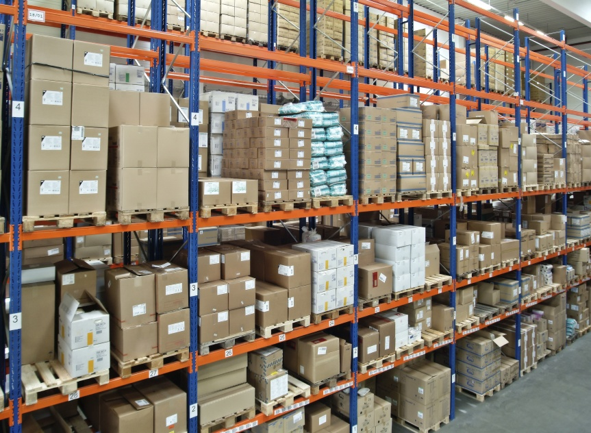

SPARE PARTS SALES
an extra compliment to vehicle trading, we bring down genuine spare parts for a range of vehicle brands and models to Sri Lanka. We take pride in the fact that we are able to provide with a company warranty as extra to the manufacturing warranty to all the spare parts. We ensure the genuineness of every part we sell and assure the best prices in the market for them as well.

SERVICE CENTER
There are 6 Indra Service Centers island-wide to provide our clients with full service packages for their vehicles. All these centers are staffed with experienced professionals for regular vehicle maintenance, servicing, general repairs and accident repairs. We assure 100% quality in our services and make sure all your vehicle needs are met satisfactorily.